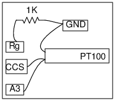

Schematic

PT100 is an RTD sensor, it's resistance changes with temperature. It is 100 Ohms at zero degree celcius.
The resistance is measured by connecting PT100 to a Constant Current Source. The voltage drop is proportional to the resistance.
It is measured after some amplification, since the voltage is less than200 mV even at 100 degC.
- Connect the PT100 sensor from the CCS to Ground. CCS = 1.1mA nominal
- Connect CCS to A3, for monitoring
- Connect a gain resistor Rg=1K, Gain = 1 + 10k/Rg = 1 + 10/1 = 11
- Select the Total Time and time between measurements
- Select the Minimum and Maximum limits for Temperatures to be measured
For better accuracy, calibrate CCS value, gain and Offset of A3.
- Connect a 1k resistor from CCS to Ground. Measure the voltage to calculate the exact value of CCS
- Connect Rg and measure A3, to get the Offset error at that gain
- Connect PT100. Meaasure A3 with and without Rg, to calculate the gain on A3
- Enter the calculated values, to get better accuracy